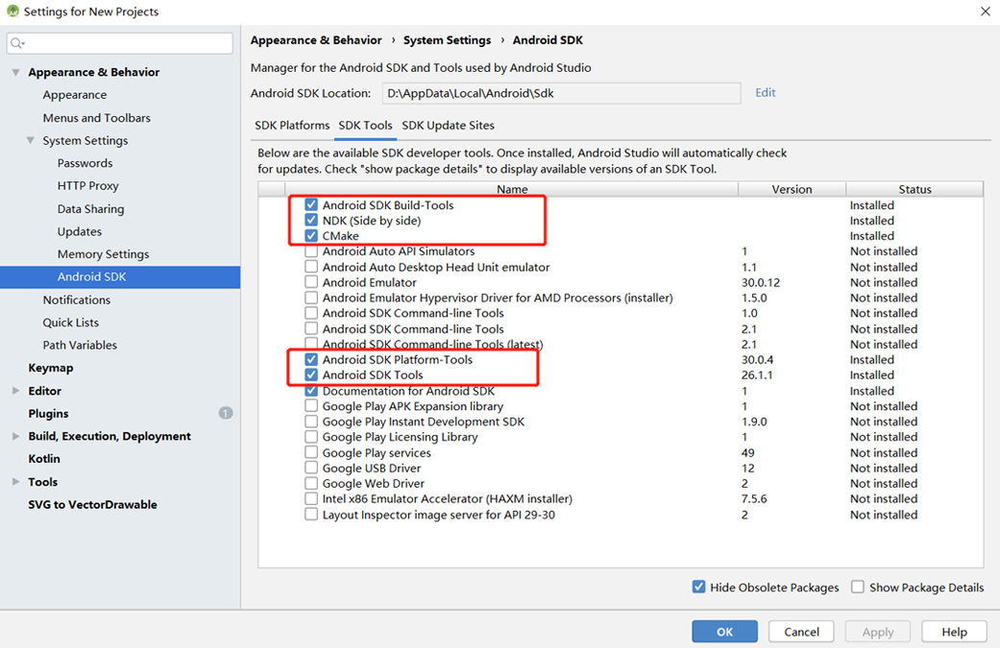
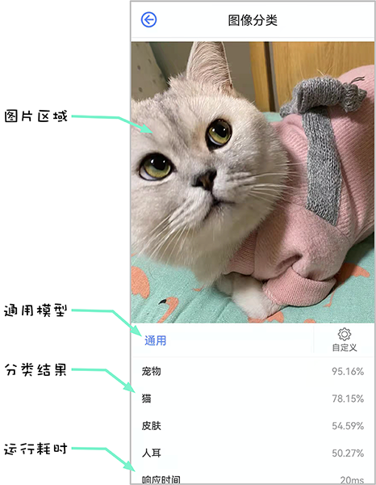

Android Application Development Based on JNI Interface¶

Overview¶
It is recommended that you start from the image classification demo on the Android device to understand how to build the MindSpore Lite application project, configure dependencies, and use related APIs.
This tutorial demonstrates the on-device deployment process based on the image classification sample program on the Android device provided by the MindSpore team.
Select an image classification model.
Convert the model into a MindSpore Lite model.
Use the MindSpore Lite inference model on the device side. The following describes how to use the MindSpore Lite C++ APIs (Android JNIs) and MindSpore Lite image classification models to perform on-device inference, implement the classification of individual images, and display the most possible classification result on the application’s image preview screen.
Click to find Android image classification models and image classification sample code.
In this example, we explain how to use C++ API. Besides, MindSpore Lite also supports Java API. Please refer to image segmentation demo to learn more about Java API.
The application development environment is Windows.
We provide the APK file corresponding to this example. You can scan the QR code below or download the APK file directly, and deploy it to Android devices for use.
Selecting a Model¶
The MindSpore team provides a series of preset device models that you can use in your application.
Click to download image classification models in MindSpore ModelZoo.
In addition, you can use the preset model to perform transfer learning to implement your image classification tasks.
Converting a Model¶
After you retrain a model provided by MindSpore, export the model in the .mindir format. Use the MindSpore Lite model conversion tool to convert the .mindir format to a .ms model.
Take the mobilenetv2 model as an example. Execute the following script to convert a model into a MindSpore Lite model for on-device inference.
call converter_lite --fmk=MINDIR --modelFile=mobilenetv2.mindir --outputFile=mobilenetv2
Deploying an Application¶
The following section describes how to build and execute an on-device image classification task on MindSpore Lite.
Running Dependencies¶
Android Studio 3.2 or later and Android 4.0 or later is recommended.
Native development kit (NDK) 21.3
CMake >= 3.18.3
Android software development kit (SDK) 26 or later
JDK 1.8 or later
Building and Running¶
Load the sample source code to Android Studio and install the corresponding SDK. (After the SDK version is specified, Android Studio automatically installs the SDK.)

Start Android Studio, click
File > Settings > System Settings > Android SDK, and select the corresponding SDK. As shown in the following figure, select an SDK and clickOK. Android Studio automatically installs the SDK.
(Optional) If an NDK version issue occurs during the installation, manually download the corresponding NDK version (the version used in the sample code is 21.3). Specify the NDK location in
Android NDK locationofProject Structure.
Connect to an Android device and runs the image classification application.
Connect to the Android device through a USB cable for debugging. Click
Run 'app'to run the sample project on your device.
For details about how to connect the Android Studio to a device for debugging, see https://developer.android.com/studio/run/device.
The mobile phone needs to turn on “USB debugging mode” for Android Studio to recognize the phone. In general, Huawei mobile phones turn on “USB debugging mode” in Settings -> System and Update -> Developer Options -> USB Debugging.
After opening the APP, you can click the classification module on the home page, and then click the middle button to take a picture and obtain an image, or click the image button on the upper sidebar to select the picture album for the image classification function.
By default, the MindSpore Vision classification module has a built-in general AI network model to identify and classify images. You can also custom model for debugging on the APP.

Detailed Description of the Sample Program¶
The Android sample program for image classification on the device is divided into the JAVA layer and the JNI layer. The JAVA layer mainly completes the rendering function of the Android page and the subsequent inference operation of obtaining an image by taking a photo or opening the mobile phone album, while the JNI layer is in Runtime to complete the process of model inference.
The JNI layer implementation of the sample program, the implementation of the JAVA layer page rendering function, and the image frame processing and other functions are described in detail here. The reader needs to have a certain basic knowledge of Android development.
Sample Program Structure¶
enginelibrary
├── src/main
│ ├── assets # resource files
| | └── mobilenetv2.ms # stored model file
│ |
│ ├── cpp # main logic encapsulation classes for model loading and prediction
| | └── classification
| | ├── CommonMindSporeNetnative.cpp # common MindSpore calls the JNI method
│ | ├── CommonMindSporeNetnative.h # header file
| | ├── CustomMindSporeNetnative.cpp # customized MindSpore calls the JNI method
│ | ├── CustomMindSporeNetnative.h # header file
| |
| | └── mindspore-lite-{version}-android-{arch} # MindSpore Lite version
| |
| | └── CMakeList.txt # CMake compilation entry file
| |
| | └── MSNetWork.cpp # MindSpore interface encapsulation
│ |
│ ├── java # Java-layer application code
│ │ └── com.mindspore.enginelibrary
│ │ └── train # Implementation of image processing and MindSpore JNI Calling
│ │
│ ├── res # resource files related to Android
│ └── AndroidManifest.xml # Android configuration file
│
│
├── build.gradle # Other Android configuration file
├── download.gradle # MindSpore version download
└── ...
Configuring MindSpore Lite Dependencies¶
When MindSpore C++ APIs are called at the Android JNI layer, related library files are required. You can use MindSpore Lite source code compilation to generate the MindSpore Lite version. In this case, you need to use the compile command of generate with image preprocessing module.
In this example, the build process automatically downloads the mindspore-lite-{version}-android-{arch}.tar.gz by the app/download.gradle file and saves in the app/src/main/cpp directory.
version: Version number of the .tar package, which is the same as the version of the compiled branch code.
arch: Operating system arm64 or arm32.
Note: if the automatic download fails, please manually download the relevant library files mindspore-lite-{version}-android-{arch}.tar.gz. After decompression, copy the mindspore-lite-{version}-android-{arch} folder to the directory of src/main/cpp.
android{
defaultConfig{
externalNativeBuild{
cmake{
arguments "-DANDROID_STL=c++_shared"
}
}
ndk{
abiFilters'armeabi-v7a', 'arm64-v8a'
}
}
}
Create a link to the .so library file in the app/CMakeLists.txt file:
# ============== Set MindSpore Dependencies. =============
include_directories(${CMAKE_SOURCE_DIR})
include_directories(${CMAKE_SOURCE_DIR}/${MINDSPORELITE_VERSION})
include_directories(${CMAKE_SOURCE_DIR}/${MINDSPORELITE_VERSION}/runtime/third_party)
include_directories(${CMAKE_SOURCE_DIR}/${MINDSPORELITE_VERSION}/runtime/include)
include_directories(${CMAKE_SOURCE_DIR}/${MINDSPORELITE_VERSION}/runtime/include/dataset)
include_directories(${CMAKE_SOURCE_DIR}/${MINDSPORELITE_VERSION}/runtime/include/dataset/lite_cv)
include_directories(${CMAKE_SOURCE_DIR}/${MINDSPORELITE_VERSION}/runtime)
include_directories(${CMAKE_SOURCE_DIR}/${MINDSPORELITE_VERSION}/runtime/include/ir/dtype)
include_directories(${CMAKE_SOURCE_DIR}/${MINDSPORELITE_VERSION}/runtime/include/schema)
add_library(mindspore-lite SHARED IMPORTED)
add_library(minddata-lite SHARED IMPORTED)
add_library(libjpeg SHARED IMPORTED)
add_library(libturbojpeg SHARED IMPORTED)
set_target_properties(mindspore-lite PROPERTIES IMPORTED_LOCATION
${CMAKE_SOURCE_DIR}/${MINDSPORELITE_VERSION}/runtime/lib/libmindspore-lite.so)
set_target_properties(minddata-lite PROPERTIES IMPORTED_LOCATION
${CMAKE_SOURCE_DIR}/${MINDSPORELITE_VERSION}/runtime/lib/libminddata-lite.so)
set_target_properties(libjpeg PROPERTIES IMPORTED_LOCATION
${CMAKE_SOURCE_DIR}/${MINDSPORELITE_VERSION}/runtime/third_party/libjpeg-turbo/lib/libjpeg.so)
set_target_properties(libturbojpeg PROPERTIES IMPORTED_LOCATION
${CMAKE_SOURCE_DIR}/${MINDSPORELITE_VERSION}/runtime/third_party/libjpeg-turbo/lib/libturbojpeg.so)
# --------------- MindSpore Lite set End. --------------------
# Link target library.
target_link_libraries( # Specifies the target library.
mlkit-label-MS
mindspore-lite
minddata-lite
libjpeg
libturbojpeg
# --- other dependencies.---
-ljnigraphics
android
# Links the target library to the log library
${log-lib}
)
Downloading and Deploying a Model File¶
In this example, the build process automatically downloads the mobilenetv2.ms by referring to the app/download.gradle file and saves in the app/src/main/assets directory.
Note: if the automatic download fails, please manually download the relevant library files mobilenetv2.ms and put them in the corresponding location.
Writing On-Device Inference Code¶
Call MindSpore Lite C++ APIs at the JNI layer to implement on-device inference.
The inference process code is as follows. For details about the complete code, see CommonMindSporeNetnative.cpp.
Load the MindSpore Lite model file and build the context, model, and computational graph for inference.
Load model file:
Read the model file in the Java layer of Android and convert it into a ByteBuffer type file
model _ Buffer, which is transferred to C++ layer by calling JNI. Finally, themodel_ Bufferis converted to char type filemodelbuffer.// Buffer is the model data passed in by the Java layer jlong bufferLen = env->GetDirectBufferCapacity(model_buffer); if (0 == bufferLen) { MS_PRINT("error, bufferLen is 0!"); return (jlong) nullptr; } char *modelBuffer = CreateLocalModelBuffer(env, model_buffer); if (modelBuffer == nullptr) { MS_PRINT("modelBuffer create failed!"); return (jlong) nullptr; }
Build context, model, and computational graph for inference:
Build context and set model parameters. Create a model from context and model data.
// To create a Mindspore network inference environment. void **labelEnv = new void *; MSNetWork *labelNet = new MSNetWork; *labelEnv = labelNet; auto context = std::make_shared<mindspore::Context>(); if (context == nullptr) { MS_PRINT("context create failed!"); delete labelNet; delete labelEnv; return (jlong) nullptr; } context->SetThreadNum(num_thread); context->SetThreadAffinity(0); auto &device_list = context->MutableDeviceInfo(); auto cpuDeviceInfo = std::make_shared<mindspore::CPUDeviceInfo>(); cpuDeviceInfo->SetEnableFP16(false); device_list.push_back(cpuDeviceInfo);
Based on the model file
modelBuffer, the computational graph for inference is constructed.bool MSNetWork::BuildModel(char *modelBuffer, size_t bufferLen, std::shared_ptr<mindspore::Context> ctx) { model_ = std::make_shared<mindspore::Model>(); if (model_ == nullptr) { MS_PRINT("MindSpore build model failed!."); return false; } auto ret = model_->Build(modelBuffer, bufferLen, mindspore::ModelType::kMindIR, ctx); return ret.IsOk(); }
Convert the input image into the Tensor format of the MindSpore model.
Cut the size of the image
srcbitmapto be detected and convert it to LiteMat formatlite_norm_mat_cut. The width, height and channel number information are converted into float format datadataHWC. Finally, copy thedataHWCto the inputinTensorof MindSpore model.void **labelEnv = reinterpret_cast<void **>(netEnv); if (labelEnv == nullptr) { MS_PRINT("MindSpore error, labelEnv is a nullptr."); return NULL; } MSNetWork *labelNet = static_cast<MSNetWork *>(*labelEnv); auto mModel = labelNet->model(); if (mModel == nullptr) { MS_PRINT("MindSpore error, Model is a nullptr."); return NULL; } MS_PRINT("MindSpore get model."); auto msInputs = mModel->GetInputs(); if (msInputs.empty()) { MS_PRINT("MindSpore error, msInputs.size() equals 0."); return NULL; } auto inTensor = msInputs.front(); float *dataHWC = reinterpret_cast<float *>(lite_norm_mat_cut.data_ptr_); // Copy dataHWC to the model input tensor. memcpy(inTensor.MutableData(), dataHWC, inputDims.channel * inputDims.width * inputDims.height * sizeof(float));
Adjust the size of the input image, as well as the detailed algorithm of data processing.
bool PreProcessImageData(const LiteMat &lite_mat_bgr, LiteMat *lite_norm_mat_ptr) { bool ret = false; LiteMat lite_mat_resize; LiteMat &lite_norm_mat_cut = *lite_norm_mat_ptr; ret = ResizeBilinear(lite_mat_bgr, lite_mat_resize, 256, 256); if (!ret) { MS_PRINT("ResizeBilinear error"); return false; } LiteMat lite_mat_convert_float; ret = ConvertTo(lite_mat_resize, lite_mat_convert_float, 1.0 / 255.0); if (!ret) { MS_PRINT("ConvertTo error"); return false; } LiteMat lite_mat_cut; ret = Crop(lite_mat_convert_float, lite_mat_cut, 16, 16, 224, 224); if (!ret) { MS_PRINT("Crop error"); return false; } std::vector<float> means = {0.485, 0.456, 0.406}; std::vector<float> stds = {0.229, 0.224, 0.225}; SubStractMeanNormalize(lite_mat_cut, lite_norm_mat_cut, means, stds); return true; }
The input tensor is inferred according to the model, and the output tensor is obtained and post processed.
The graph and model are loaded and on device inference is performed.
std::vector<mindspore::MSTensor> outputs; // After the model and image tensor data is loaded, run inference. auto status = mModel->Predict(msInputs, &outputs);
Get the tensor output
msOutputsof MindSpore model. The text informationresultCharDatadisplayed in the APP is calculated throughmsOutputsand classification array information.auto names = mModel->GetOutputTensorNames(); std::unordered_map<std::string, mindspore::MSTensor> msOutputs; for (const auto &name : names) { auto temp_dat = mModel->GetOutputByTensorName(name); msOutputs.insert(std::pair<std::string, mindspore::MSTensor>{name, temp_dat}); } std::string resultStr = ProcessRunnetResult(::RET_CATEGORY_SUM,::labels_name_map, msOutputs); const char *resultCharData = resultStr.c_str(); return (env)->NewStringUTF(resultCharData);
Perform post-processing of the output data. Obtain the output object
outputTensorthroughmsOutputs, and parse it with the thing category arraylabels_name_mapto obtain the training score arrayscores[]of each element. Set the credibility threshold value tounifiedThre, and count the credibility threshold value according to the training data. Above the threshold, it belongs to this type. On the contrary, it is not. Finally, a corresponding category name and corresponding score datacategoryScoreare returned.std::string ProcessRunnetResult(const int RET_CATEGORY_SUM, const char *const labels_name_map[], std::unordered_map<std::string, mindspore::MSTensor> msOutputs) { // Get the branch of the model output. // Use iterators to get map elements. std::unordered_map<std::string, mindspore::MSTensor>::iterator iter; iter = msOutputs.begin(); // The mobilenetv2.ms model output just one branch. auto outputTensor = iter->second; int tensorNum = outputTensor.ElementNum(); MS_PRINT("Number of tensor elements:%d", tensorNum); // Get a pointer to the first score. float *temp_scores = static_cast<float *>(outputTensor.MutableData()); float scores[RET_CATEGORY_SUM]; for (int i = 0; i < RET_CATEGORY_SUM; ++i) { scores[i] = temp_scores[i]; } const float unifiedThre = 0.5; const float probMax = 1.0; for (size_t i = 0; i < RET_CATEGORY_SUM; ++i) { float threshold = g_thres_map[i]; float tmpProb = scores[i]; if (tmpProb < threshold) { tmpProb = tmpProb / threshold * unifiedThre; } else { tmpProb = (tmpProb - threshold) / (probMax - threshold) * unifiedThre + unifiedThre; } scores[i] = tmpProb; } for (int i = 0; i < RET_CATEGORY_SUM; ++i) { if (scores[i] > 0.5) { MS_PRINT("MindSpore scores[%d] : [%f]", i, scores[i]); } } // Score for each category. // Converted to text information that needs to be displayed in the APP. std::string categoryScore = ""; for (int i = 0; i < RET_CATEGORY_SUM; ++i) { categoryScore += labels_name_map[i]; categoryScore += ":"; std::string score_str = std::to_string(scores[i]); categoryScore += score_str; categoryScore += ";"; } return categoryScore; }